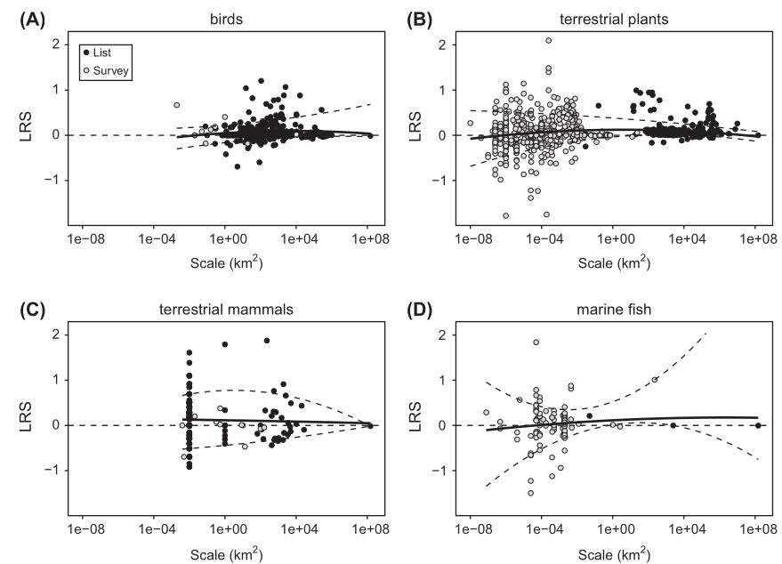
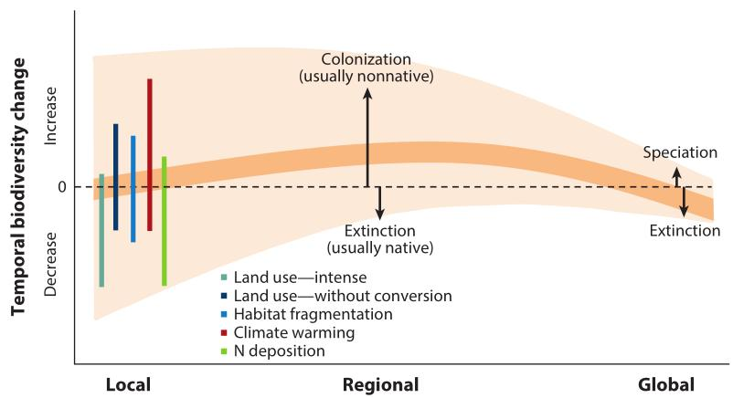
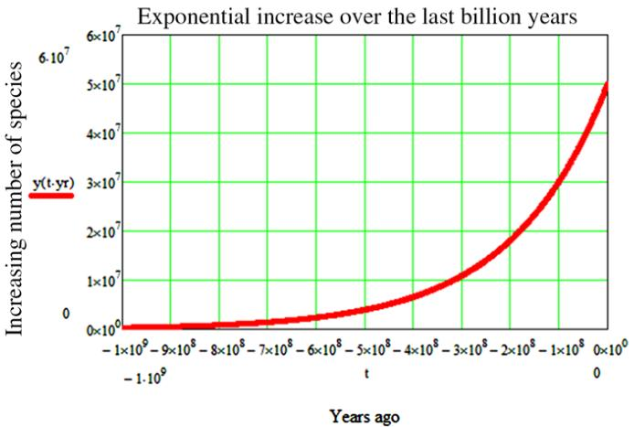
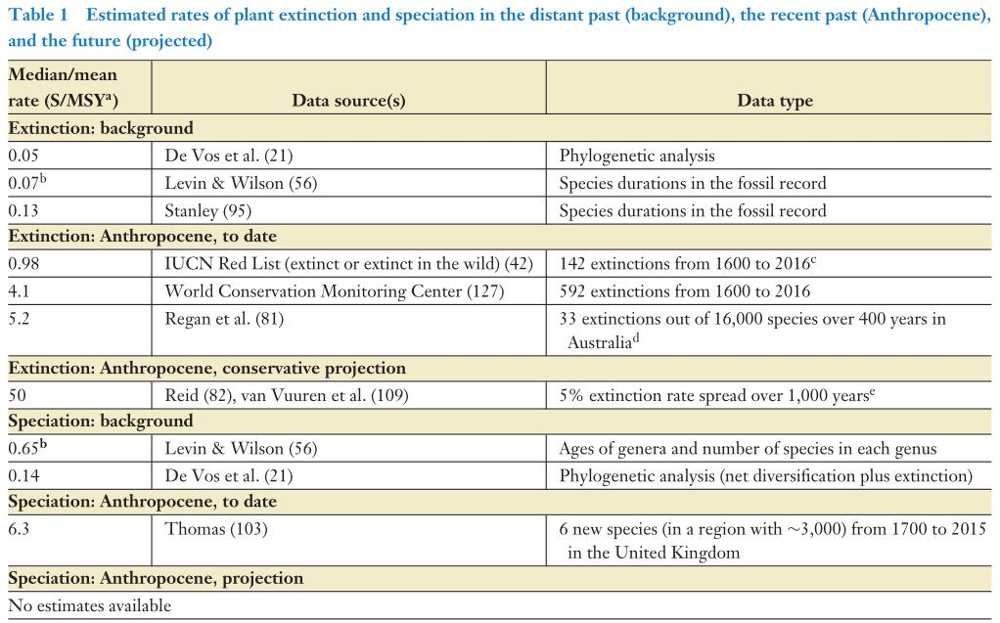
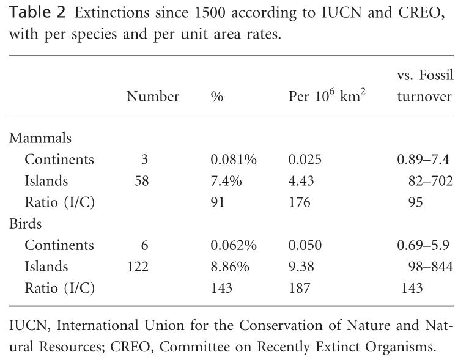
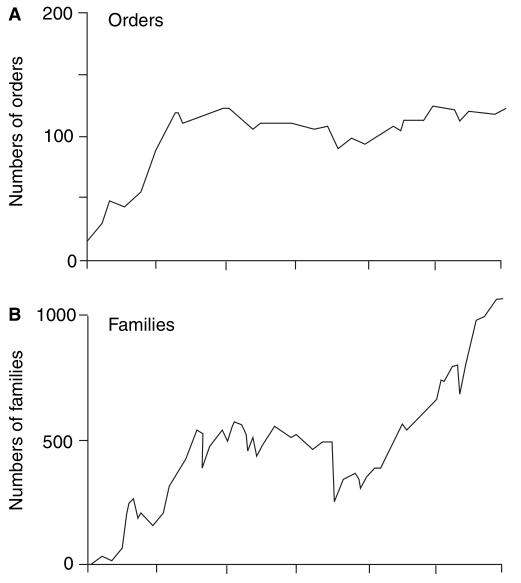
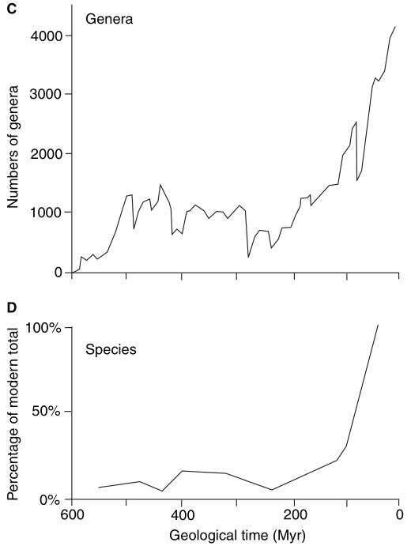
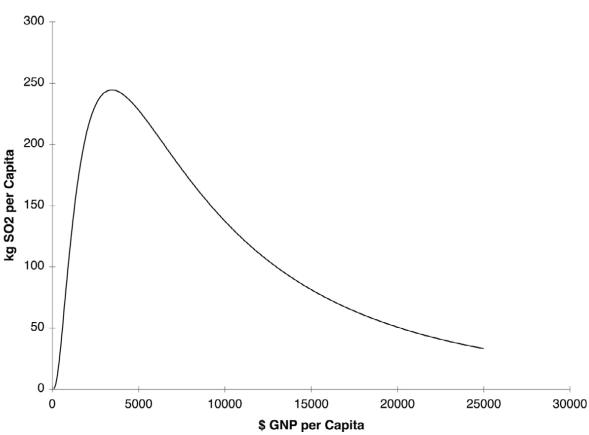

SONI-NETO, Jamil.
Free and independent research. Pesquisa independente e livre, Brasil, 2021.
jamilbio20 [at] gmail [dot] com
Since European colonisation begun, exotic species have caused problems and concerns on biodiversity loss are currently on the table. We review scientific literature to better understand the role biodiversity plays on global, regional and local scales and whether changes in biodiversity composition affect ecosystem function. We also analyse various Red Lists and reports from world and Brazilian entities. Species of interest can recover if active predation is thwarted and conservation efforts undertaken. We conclude that reports based on Red Lists are exaggerated and there is no threat of biodiversity loss at sight.
Keywords: biodiversity change, anthropic pressure, community ecology
Desde o começo da colonização europeia, espécies exóticas têm causado problemas e preocupações sobre perda de biodiversidade estão em jogo. Revisamos a literatura científica para melhor entender qual o papel que a biodiversidade executa nas escalas global, regional e local, e se mudanças na composição de biodiversidade afetam a funcionalidade do ecossistema. Também analisamos várias Listas Vermelhas e relatórios de entidades mundiais e brasileiras. Espécies de interesse podem se recuperar se predação ativa for barrada e esforços de conservação empreendidos. Concluímos que relatórios baseados nas Listas Vermelhas são exagerados e que não há ameaça iminente de perda de biodiversidade em vista.
Palavras-chave: mudança de biodiversidade, pressão antrópica, ecologia de comunidades, red list
Threats from environmentalist groups about the effects of climate change are not restricted to the supposed global warming but also include a pleiad of other misfortunes and extreme events that develop simultaneously such as sea level rise, ocean water acidification and, in the tropical and temperate forests, a large loss of biodiversity with drastic extinction of animal and plant species in an uncontrolled manner, even menacing survival of the human species. In this chapter we propose to debate this prediction under the light of science, detached from emotional tension and apocalyptic debate that is propelled by peers from scientific papers and books. Source and complete research of this present paper can be found at the website <https://biodiversidade.github.io/>.
Lamarck, Darwin and Wallace are gradualists in their evolution theories. The geologist Niels Eldredge with his observations of fossils in 1972, noticed long and monotonous periods without morphological body modifications of species which periods he coined ‘stasis’ (from static) and hypothesised that the same environment pressures directing extinctions are also responsible for speciation patterns. With that, he formulated the “punctuated equilibrium” theory in which new speciation patterns punctuate long and monotonous periods of biological stasis. Transposable genetic elements (transposons) play a crucial role in this phenomenon.
Environment pressure must reach all the species geographically and morphological change only occurs after genetic evolution and when isolated breeding communities can no longer exchange information with related species (subspecies).
In Darwin’s notes when he transected South America, Brazil and Argentina, in 1832, he wondered whatever the reason for low species diversity of some biological genera. If space were more important than time in the history of life, that could explain species stability in an integrated continental territory such as Brazil over time, in contrast with species related to each other albeit morphologically distinct he observed in archipelagos.
Biological diversity rates can be calculated subtracting speciation and extinction rates over a geographical locality (macroecology) or over time (macroevolution). Since approximately the 1600s, there are well recorded changes in species composition in various areas in the world.
Excluding archaea, bacteria, fungi and virus, that is estimated to be about 1.5-1.9 million described species while the great majority has not been. Total number of terrestrial plants must be greater than 450 thousand. Animal estimates range from 3 to 11 million species on planet Earth, while insects alone can range from 5 to 6 million species. Other authors question the possibility of a plausible estimate when all uncertainties in the number of insects and fungi are taken under account. Marine species are estimated between 700 thousand and 2.2 million, with only approximately 226 thousand described out of those. Observed mean lifetime of invertebrate and vertebrate species is from one to 10 million years.
In geological history, there were five great extinction events, all recorded in the Phanerozoic some 570 million years ago and mostly their conclusion coincided with the start of speciation events. The first great speciation event was the Cambrian Explosion of skeletal marine animals approximately 540 million years ago. The second is called the Great Ordovician Biodiversification Event (GOBE). That would be an excessive simplification to think that a dramatic event unchained big biodiversity pulses in all fossil groups at the global scale in a particular time frame, for example, GOBE was not a single event.
There was biodiversity increase in local richness during Cretaceous (K) and Paleogene (Pg), followed by relative stasis until present terrestrial tetrapods. Stasis pattern in local richness of species before and after the K/Pg frontier was broken by an abrupt increase of two to three times in number of species.
After a time lapse of the order of ten million years after a mass extinction the original level of biodiversity is restored in communities as result of increased speciation rate. Speciation rate apparently culminates roughly ten million years after the end of a mass extinction event and remains accelerated.
Plant production increase has always been linked to local biodiversity gain. In the last decade, there were published papers which go against various conservationism assumptions. Recent analyses refute the link between diversity loss of plant species and ecosystem function and question alleged motivations of current biodiversity conservationism when confronted with experimental results.
In the absence of total habitat conversion, e. g. when a tropical forest becomes a parking lot or a monoculture crop, local plant diversity declined very little or not at all, on average, in the last century (figure 1, upper panel in B and lower panel), nor there is available data that can forecast otherwise in the future. Observed species diversity rates are irrelevant in ecosystem function assessment, e. g. production and nutrient cycling.
Species play more influent roles in the local scale interface. There are as many increases as reductions in biodiversity, specially of plant species, in all scales except global which, arguably, registers decline.


Figure
1. Upper panel:
these figures show a plot of LRS (log ratio of species richness)
versus log spatial scale, indicating trends (positive is an increase,
negative a decrease in richness). Light circles are survey-based
data. Dark circles are checklist-based data. Data are presented for
(A) terrestrial birds, (B) terrestrial plants, (C) terrestrial
mammals and (D) marine fishes during Antropocene. The solid line is
the fit from a quadratic ordinary least squares regression and the
dashed lines are the 10 and 90% quantiles. Context dependence (scale)
allows a wide range of variation for each forcing in whatever
direction (Chase, 2019). Lower panel:
in comparison, similar graph for plants from Vellend (2017).
Conservation programmes decreed “ecological successes” are opinion of each individual groups and their goals debatable, e. g. how to reconcile conservation efforts that require conflicting resources for various species (even with human beings)? Hairy and feathery animals in the top of the food chain are very much valued by people, however they occupy a more plastic niche (place) in the ecosystem and are less important than animals from the base of the food chain, such as cockroaches, which do not attract as much attention.
Researchers from Rio de Janeiro evaluated restoration plans of hundreds of medium and large-sized localities in South Bahia in which there were vast Eucalyptus forests. Those areas were compared to other tropical restoration areas with regeneration time from half to 200 years. The response of biodiversity ratio in naturally regenerated forests was more similar to reference forests from countries with low, high and very high Human Development Index. This potentially reflects biodiversity restoration projected by the Environmental Kuznets Curve (EKC).
The EKC is used by economists for projecting pollution emission vs per capta income. In early stages of economical growth human impacts increase, including pollution emission, however after reaching certain development levels this trend reverts. When the abscissa axis contains time and the ordinate axis the level of some pollutant, that can be observed an “inverted-U” curve of the pollutant level over time, which is characteristic of EKC.
In primary analysis, some weak points can be verified about WWF Living Planet Index (LPI). In one index from the report, the region with highest ecological footprint is the Neartic (includes United States), whereas the Neotropical region has low ecological footprint. However, the Neartic region, within the confidence levels, practically restores its LPI index to levels close to 1970 marks, whereas the Neotropical region is presented as the worse contributor for the decline in the global index throughout the period of study. In order to conciliate these results, we must resort to EKC.
There was debate in the scientific community about WWF LPI data and assertions which state that more than 50% of animal species had gone extinct in the world. Such an assertion turns out to be an artefact due to less than 3% of the index vertebrate population distorting it. When these extreme decline populations are taken out from the calculation, the global trend turns to increase of species.
There are a couple authoritative lists that register extinct and extinction risk specie names. These lists are used world-wide and are frequently cited reciprocally, however their methodologies are strikingly different. In certain lists, species that were not even properly described or seen only once are considered extinct. Methodological changes that hasten the verdict of extinction of species are problematic, for e. g. mammals are frequently rediscovered, such effect called the “Lazarus effect”.
In 1920, Arrhenius postulated there to exist a positive relation between area and number of species. Wilson & MacArthur formulated the theory of island biogeography in 1967 and Wilson based his allegations between species vs area. However, this relation was put upside down and it was proposed that habitat reduction must change species which in turn supposedly means reduction in the number of population or disappearance of some species, birds and great mammals being more susceptible to extinction. Event though plausible, this postulate became one more artifact amongst modern biologists.
Postulates of more than 27,000 extinctions within the period called Anthropocene by scientists, the Intergovernmental Science-Policy Platform on Biodiversity and Ecosystem Services (IPBES) and United Nations proved to be extremely exaggerated.
Species subject to colonise only a small area are really not deemed to have a great future, this being the case of most extinct species of the IUCN Red List in the global level, represented mainly by insect and insular species. When European predators (such as rats, snakes, dogs and cats) run across new environments native species died, with 95% of mammal extinctions being from insular and Australian species. The arrival of Europeans to Australia, which territory had been isolated from the continent for the previous 40 million years, was a single event.
Extinction lists from the IUCN Red List, ordinances from Brazilian Ministry of the Environment nº 444 e 445 (17/Dec/2014) and lists produced by the Chico Mendes Institute for Biodiversity Conservation (ICMBio) were analysed in the present paper. Lists from these governmental entities were subsequently used by the Brazilian Institute of Geography and Statistics (IBGE) in its Ecosystem Accounts from 2020.
Table 1. Number of category changes that occurred between 2007 and 2021, as well as the proportion of criteria with non-genuine (when new data, taxonomic revision and others become available), genuine and hybrid motivations of the IUCN Red List.
Motivation |
Changes |
Proportion |
Improved |
Worsened |
Same |
Non-genuine |
8288 |
88,31% |
3756 |
4474 |
58 |
Genuine |
1092 |
11,64% |
163 |
921 |
8 |
Hybrid |
5 |
0,05% |
5 |
0 |
0 |
Total |
9385 |
100,00% |
3924 |
5395 |
66 |
IUCN Red List points 20 species as extinct in Brazil in its Dec/2021 update. Regionally extinct species, such as sharks, may migrate territory without necessarily damaging ecological function. In the Red List, five plant species were observed extinct, all poorly collected and restricted to relatively small patches of Rio de Janeiro state, however their biological families are far from danger (Myrtaceae and Sapotaceae). Still, more recent studies made progress in the ecology of various animal species, such as the scarab Megadytes ducalis, which may aid in its rediscovery.
On the other hand, Brazilian IBGE Ecosystem Accounts (2020) and ICMBio Red Book (2018) present ten extinct animal species in Brazil. From those, five were regionally extirpated (RE) and have got recovery potential in other lands or countries about the world, and therefore ought not to be considered extinct in the global scale.
The only tetrapods that can be considered really extinct (EX) are Noronhomys vespuccii (insular rodent from Fernando de Noronha) and Phrynomedusa fimbriata (frog natural of only Alto da Serra, Paranapiacaba, Santo André-SP). Even with 10% left of the Atlantic Rainforest, only the species Pauxi mitu (sin. Mitu mitu, Alagoas helmeted curassow) is extinct in the wild (EW), and maybe Glaucidium mooreorum (Pernambuco pygmy owl, still listed as critical risk [CR] in the IUCN Red List), both restricted to central Pernambuco state, the latter species discovered in an area of less than 5 Km² and without vocalization records since 2001.
For their turn, Cichlocolaptes mazarbarnetti (Atlantic rainforest Cryptic treehunter, last seen in 2005) and Philydor novaesi (Alagoas foliage-gleaner, considered rare, observed in secondary and selectively logged forests, last seen in 2011) had their category worsened to EX by classification methodologies adopted recently. See Table 1 for motivations of category changes of IUCN Red List species from 2007 to 2021.
The EKC has received criticism since its inception, partly because of differences in opinions of what pollution is. Other problematic critique revolves about duration of time lapses needed to observe the effect. In general, the EKC reveals that human development sets excessive pollution in check over time and restores environmental levels.
Scrutiny of extinction lists uncovers important nuances for their proper interpretation. In multiple cases their results and deductions are exaggerated. It is noted that IUCN Red List is more dependable than IPBES report because the former uses a more conservative methodology that only counts species with Latin names, in contrast to IPBES which considers species that do not even have got a name. Recent methodology changes made many species to be considered extinct. Brazilian lists also present exaggerated diagnosis, disputably there being only two bird extinctions from Atlantic rainforest. The species vs area relation is not kept when there is habitat reduction.
Conservation efforts help to alleviate or even revert extinctions. As long as species are not insular nor inhabitant of restricted places and not subject to over hunting by invading predator species, such as men, habitat reduction is not an extinction sentence.

Figure 2. Since its inception, life on Earth follows an exponential curve representing the growing number of species (the graph does not take under account the well known mass extinctions) (Maccone, 2013).
Environment pressure benefit some species and harm others and biodiversity did not decline in all levels in all places, arguably even increased in the global level when a small percentage of extreme decline populations (mainly from islands) is taken out from calculations. Ecosystem function do not seem to be hurt, in general, by the observed rapid biodiversity compositional change, specially in the plant and marine domains, even though species homogenisation may be present in the regional and local scales.
Lastly, biodiversity generation follows the first and second laws of thermodynamics for it improves entropy generation and, therefore, increases entropy of the whole system. There is no way we can brake this great biological reactor that is Planet Earth (figure 2)!
Com maior tempo de evolução das espécies, menos mudanças podem ser observadas, pois mutações geradas muito rapidamente por pressões ambientais variantes não são possíveis de serem percebidas com baixa resolução temporal, como nos estudos de evolução fossilífera. Alterações ambientais promovem a “Corrida da Rainha Vermelha” em diversos níveis de função e os organismos sempre mudam mais ainda que para retornar e acompanhar um estado anterior.
Lamarck, Darwin e Wallace são gradualistas em suas teorias de evolução. O geólogo Niels Eldredge em 1972, com suas observações de fósseis, verificou que há longos e tediosos períodos sem mudança na morfologia de espécies que chamou de “estase” (de estático) e que os mesmos fatores ambientais dirigindo extinções também são responsáveis por padrões de especiação. Com isso, formulou a teoria do “equilíbrio pontuado”, quando novos padrões de especiação furam longos períodos monótonos de estase biológica. Elementos genéticos transponíveis (transposons) são essenciais nesse fenômeno (Casanova, 2020).
A pressão ambiental deve atingir toda a espécia geograficamente e as mudanças morfológicas somente ocorrerão depois da evolução genética e quando comunidades reprodutoras isoladas não puderem mais trocar informação com outras espécies relacionadas (subespécies).
Nas anotações de Darwin quando passou pela América Latina, cerca de 1832, Brasil e Argentina, questionou qual motivo de não verificar alta diversidade de alguns gêneros em sua longa transecção. Se o espaço fosse mais importante do que o tempo na história da vida, poder-se-ia explicar a estabilidade nas espécies em um território continental integrado como o nosso ao longo do tempo, em contraste com espécies relacionadas entre si porém distintas morfologicamente que observaria em arquipélagos.
A taxa de diversidade pode ser calculada pela diferença entre as taxas de especiação e extinção ao longo do espaço geográfico (macroecologia) ou ao longo do tempo (macroevolução). Desde aproximadamente 1600, há mudanças bem registradas na composição de espécies de vários lugares no mundo.
Pimm (2014) faz um apanhado do número geral de espécies. Sem contar as archaeas, bactérias, fungos e vírus, estima-se que haja por volta de 1,5-1,9 milhões de espécies descritas (ver também Mora, 2011), enquanto a grande maioria ainda não foi. O número total de plantas terrestres deva ser maior que 450 mil. Estimativas de números de animais vão de três a 11 milhões de espécies no planeta Terra, sendo estimados entre cinco e seis milhões de espécies de insetos somente, enquanto outros autores questionam a possibilidade de uma estimativa plausível quando consideram as incertezas nos números de insetos e fungos. Espécies marinhas são estimadas entre 700 mil e 2,2 milhões, com somente aproximadamente 226 mil descritas. A média de período de existência de espécies de invertebrados e vertebrados verificada é de um a dez milhões de anos (vide taxas de extinção, tabelas 1 e 2).

Tabela 1. Taxas estimadas de extinção e especiação de plantas no passado distante (fundo), passado recente (Antropoceno) e futuro (projetado). Espécies por milhão de anos por ano ou, alternativamente, espécies por espécies por milhão de anos; por exemplo, uma especiação estimada em 1,0 S/MSY significa que a cada milhão de espécies uma nova espécie surgirá a cada ano, ou, equivalentemente, cada espécie tem a probabilidade de gerar uma espécie adicional a cada milhão de anos (Vellend, 2017).

Tabela 2. Extinções desde 1500 de acordo com o IUCN e CREO. Por base de unidade de área, a taxa de extinção nas ilhas foi 177 vezes maior para os mamíferos e 187 vezes maior para as aves do que nos continentes. A taxa continental de extinção de mamíferos foi entre 0,89 e 7,4 vezes a de fundo, enquanto a taxa de extinção de mamíferos de ilhas foi entre 82 e 702 vezes a de fundo. A taxa de extinção de aves continentais foi entre 0,69 e 5,9 vezes a de fundo, enquanto para ilhas foi entre 98 e 844 vezes a de fundo. Razão das taxas de ilha/continente (I/C). Extinções pré-históricas não documentadas, principalmente em ilhas, ampliam essas tendências. As taxas de extinção de ilhas são muito mais altas do que as taxas continentais, em grande parte devido à introdução de predadores alienígenas (incluindo o homem) e doenças (Loehle & Eschenbach, 2012).
Transições de espécie para espécie são difíceis de documentar. Para ser demonstrar como uma espécie surgiu, gradualmente ou repentinamente, são necessários estratos excepcionalmente completos, com muitos animais mortos enterrados sob uma sedimentação rápida e constante, o que não é comum em ambientes terrestres (Gingerich, 1976, 1980).
Em um mundo físico heterogêneo e em mutação, nem tudo é um mar de rosas para a biodiversidade. Variações espaçotemporais na biodiversidade são a regra e não a exceção (Escarguel, 2011).
Na história geológica, houve cinco grandes eventos de extinção, todos registrados no Fanerozoico, há 570 milhões de anos e, na sua maioria, seus términos coincidiram com o início dos eventos de especiação. O primeiro grande evento de especiação foi a explosão Cambriana de animais marinhos esqueléticos há aproximadamente 540 milhões de anos. O segundo foi o Grande Evento de Biodiversificação do Ordoviciano (GOBE) (Webby, 2004). Seria uma simplificação excessiva dizer que um evento dramático desencadeou grandes pulsões de biodiversidade em todos os grupos fósseis em nível global em um intervalo de tempo particular, por exemplo, o GOBE não foi um evento único (Servais, 2021) (ver figura 1). Adendo: GOBE ocorreu juntamente com o evento de extinção do Cambriano-Ordoviciano.
Close (2019) evidencia um aumento de diversidade na riqueza local durante o Cretáceo (K) e Paleogêneo (Pg), seguido de relativa estase até o presente nos tetrápodes terrestres. O padrão de estase em riqueza local de espécies antes e depois da fronteira K/Pg foi quebrado por um aumento abrupto de duas a três vezes no número de espécies.


Figura 1. Padrões de diversificação de animais marinhos com esqueletos bem formados, contados como: A, ordens; B, famílias; C, gêneros; e D, espécies. Contagens ordinal, familial e genérica são baseadas em dados empíricos, enquanto que a curva de espécies é baseada em contagens reais e em simulações. A curva é plotada como porcentagens do total moderno (100%) (Benton & Emerson, 2007).
Após um espaço da ordem de dez milhões de anos, o nível de biodiversidade original é restaurado nas comunidades como resultado de uma maior taxa de especiação. A taxa de especiação aparentemente culmina aproximadamente após dez milhões de anos depois do final de uma extinção em massa (Flegr, 2009) e permanece acelerada. A duração desse período não parece estar correlacionado com o número de espécies (riqueza) afetadas pela extinção (Kirchner, 2000).
Durante todo o período Fanerozoico, o número de eventos de especiações foi quase igual com os de extinções, com uma diferença de somente 0,1-1% (Close, 2019; Flegr, 2009).
Em outra frente, aumento de produtividade vegetal sempre foi relacionado com aumento de diversidade local. Na última década, apareceram artigos que vão na contramão de vários pressupostos conservacionistas. Análise de Vellend (2013) contradiz o pressuposto que diminuição da diversidade de espécies vegetais estaria ligada a perda de função do ecossistema e questiona as motivações alegadas para conservação da biodiversidade atual quando as põe em cheque contra resultados experimentais.
Na ausência de conversão total de habitat, por exemplo uma floresta tropical tornando-se um estacionamento ou uma plantação de monocultura, a diversidade local de plantas declinou muito pouco ou não declinou, em média, no último século (figura 2, painel superior em B e painel inferior), nem há dados que indiquem que o futuro será diferente. Diferenças observadas na taxa de diversidade de espécies são fundamentalmente irrelevantes na avaliação de função de ecossistema, como, por exemplo, produtividade ou ciclagem de nutrientes.
As espécies exercem função de forma mais influente na interface da escala local. Há tantos aumentos quanto declínios de biodiversidade, especialmente de espécies vegetais, em todas as escalas exceto na global, que registra declínio.
Blowes (2019) mostra resultados de várias táxons (grupos de animais marinhos e terrestres) em diferentes partes do mundo e verificou que as tendências são indiscerníveis de zero (nota-se o erro estatístico é equivalente ao sinal para parcelas de quase todas as áreas de extensão, menos na maior), e que, em ambientes costeiros marinhos, a biodiversidade tende a aumentar, no geral.
Baselga (2015) sugeriu que mudanças na cobertura da paisagem agrícola tem pouco impacto na diversidade β temporal (turnover) das assembleias (ou grupos) de aves continentais.
Em Daskalova e Dornelas (2020), no domínio terrestre, estudou-se a prevalência de ganhos e perdas de cobertura de floresta e verificou-se que mudança na floresta é um catalisador tanto para maiores ganhos e perdas de biodiversidade e não somente um catalisador para perdas.
Programas de conservação consagrados “sucessos ecológicos” são opinião de cada grupo e seus propósitos debatíveis (Barnaud, 2021; Cardinale, 2018), por exemplo como conciliar esforços de conservação de espécies que necessitam de recursos conflitantes (até mesmo com o ser humano) (Ceballos, 2005)?
Figura
2. Painel superior:
o LRS (razão logarítmica de riqueza de espécies) contra a escala
espacial logarítmica. Círculos claros são de dados provenientes de
observações e círculos escuros são baseadas em listas de
checagem. Dados apresentados para (A) aves terrestres, (B) plantas
terrestres, (C) mamíferos terrestres e (D) peixes marinhos durante o
Antropoceno. A linha sólida representa o melhor ajuste de uma
regressão quadrática ordinária dos mínimos quadrados e a linha
tracejada são os quantis de 10% e 90%. Dependência
de contexto (escala) cria uma ampla gama de variações para cada
forçante, em qualquer das direções (Chase, 2019). Painel inferior:
em comparação, gráfico similar para plantas terrestres de Vellend
(2017).
Pesquisadores do Rio de Janeiro (Latawiec, 2016) avaliaram o plano de restauração de 284 localidades de tamanho médio e grandes na Bahia, em que havia grandes plantações de Eucalyptus. Foram comparadas com outras áreas de regeneração tropicais com tempo de regeneração de meio a 200 anos. A resposta da proporção da biodiversidade em florestas regeneradas naturalmente foi mais similar em florestas de referência de países com valores de IDH baixo, alto ou muito alto. Isso reflete, potencialmente, a recuperação da biodiversidade prevista pela curva ambiental de Kuznets.
A curva ambiental de Kuznets é usada por economistas para modelagem de emissões de poluentes e renda per capta. Nos estágios iniciais do crescimento econômico, impactos humanos aumentam, incluindo emissões de poluentes, mas depois de certos níveis de desenvolvimento, a tendência se reverte (figura 3) (Stern, 2004).

Figura 3. Curva ambiental de Kuznets para emissões de dióxido de enxofre. Nota-se que o impacto ambiental ou emissões per capta é uma curva em forma de U invertido como uma função do PIB per capta (Stern, 2004).
Em análise, pude verificar alguns pontos fracos sobre o Living Planet Index (LPI) da WWF. A pesquisa delimita o planeta em cinco regiões. Em uma dos índices no relatório, a região com maior pegada ecológica de consumo é justamente a neártica (inclui Estados Unidos), já a região neotropical (inclui o Brasil) tem uma pegada ecológica baixa. Porém, a região neártica, dentro dos limites de confiança, praticamente restaura seu índice LPI a níveis próximos de 1970, enquanto a região neotropical é apresentada como a pior contribuidora para o declínio do índice global no período estudado. Para conciliarmos esses resultados, devemos nos lembrar da Teoria Ambiental de Kuznets, já estudada anteriormente.
Outros problemas com relação ao estudo da WWF sobre abundância de espécies é a desproporção entre localidades de estudos no hemisfério norte, além de poucos estudos no hemisfério sul, em especial a região neotropical, acusada de ter perdido 89% da abundância de espécies pelo relatório! As preocupações levantadas implicam que o índice não é necessariamente um indicador global, equilibrado e sem imparcialidade.
Ainda, utilizam na metodologia do LPI, programas de ciência do cidadão, coletas feitas por cidadãos amadores e preocupante tanto pela qualidade e uniformidade nos métodos e coleta quanto resultados de identificações de espécies.
Leung (2020) reanalisou dados e afirmações do LPI da WWF, que dizia que mais de 50% das espécies animais haviam sido extintas no mundo. Observou-se que, em grande parte, esse dado é um artefato devido a menos de 3% das populações de vertebrados do índice (maioria insulares) estarem distorcendo o índice. Quando essas populações em declínio extremo são excluídas, a tendência global muda para aumento.
Há pelo menos duas listas oficiais autoritárias disponíveis que contabilizam espécies com risco de extinção e extintas, como a Red List da IUCN (International Union for Conservation of Nature and Natural Resources) e do grupo Committe on Recently Extinct Organisms (CREO), do Museus de História Natural de Nova York. A metodologia do CREO é mais rígida. Por exemplo, primeiro deve ser demonstrado que realmente há uma espécie envolvida para análise e é necessário que haja taxonomia, espécimens e DNA (se possível). Nem todas espécies da Red List apresentam dados completos sobre localização! Algumas das restrições impedem que organismos avistados somente uma vez em uma única ocasião possam ser considerados extintos, mas ambas listas se citam reciprocamente.
O pesquisador climático independente Willis Eschenbach decidiu verificar as duas listas e reavaliar as espécies de aves e animais. Para reavaliar o postulado de Wilson e MacArthur (1967) na questão específica sobre perda de habitat (e não sobre introdução de espécies), Loehle e Eschenbach (2012) excluíram da análise todas extinções de espécies insulares que tiveram contato com europeus durantes explorações nos últimos 500 anos. Espécies introduzidas em arquipélagos e na Austrália causaram verdadeiro estrago. Por outro lado e para grande surpresa, foi verificado somente nove extinções (seis aves e três mamíferos, até 2012) em todos os continentes do mundo como África, Europa, Ásia, América do Norte e América do Sul, nos 500 anos antecedentes.
Os postulados de Wilson de que haveria tido 27.000 extinções nesse período (que coincide com estimativas do Intergovernmental Science-Policy Platform on Biodiversity and Ecosystem Services (IPBES) e Nações Unidas e de que as aves e os animais seriam os mais afetados se mostraram extremamente exagerados.
Espécies sujeitas a colonizar somente uma pequena área realmente não estão destinadas a ter um ótimo futuro. Esse é o caso da grande maioria das espécies extintas da Red List. Conclui-se que quando predadores europeus encontraram novos ambientes (ratos, serpentes, cachorros e gatos), espécies nativas morreram, sendo que 95% das extinções de mamíferos são espécies insulares e australianas. A chegada dos europeus na Austrália, que estava isolada do continente por 40 milhões de anos anteriores, foi um evento único.
O geólogo veterano e autor do livro “Inconvenient Facts: The Science that Al Gore Doesn't Want You to Know”, Gregory Wrightstone revelou em blogs (2019a e 2019b) uma análise aprofundada da Red List e uma interpretação detalhada bem diferente do encontrado pelo IPBES, expondo resultados parecidos com Loehle e Eschenbach (2012).
Ainda, Fisher e Blomberg (2011) mostraram que espécies de mamíferos são frequentemente redescobertas, chamado “efeito Lázaro”.
Analisei as listas de extinção da Red List, as portarias do Ministério do Meio Ambiente nº 444 e 445 (17/12/2014) e a Lista Vermelha produzida pelo Instituto Chico Mendes de Conservação (ICMBio), quais listas foram por sua vez utilizadas pelo Instituto Brasileiro de Geografia e Estatística (IBGE) em suas Contas de Ecossistemas de 2020.
Motivações |
Mudanças |
Proporção |
Melhorou |
Piorou |
Igual |
Não-genuínas |
8288 |
0,88 |
3756 |
4474 |
58 |
Genuínas |
1092 |
0,12 |
163 |
921 |
8 |
Híbridas |
5 |
0 |
5 |
0 |
0 |
Total |
9385 |
1 |
3924 |
5395 |
66 |
Tabela 3. Número mudanças de categoria que ocorreram de 2007 a 2021 e proporção da utilização de critérios com motivações não-genuínas (quando novos dados são avaliados, revisão taxonômica, etc), genuínas e híbridas da Red List da IUCN (arquivo pessoal).
A Red List aponta 20 espécies como extintas no Brasil em sua última atualização (Dez/2021). Espécies extintas regionalmente, como tubarões, podem migrar de território, como veremos, sem necessariamente prejuízo de função de ecossistema. Na Red List, observa-se cinco espécies vegetais extintas, todas restritas a relativamente pequenas áreas do estado do Rio de Janeiro e pouco coletadas, mas suas famílias vegetais estão longe de correr perigo (Myrtaceae e Sapotaceae). Ainda, estudos recentes estão possibilitando melhor conhecimento da ecologia de várias espécies de animais, como escaravelhos Megadytes ducalis, o que pode ajudar em seu redescobrimento (por exemplo, Hendrich, 2019).
Já as Contas de Ecossistema (2020) do IBGE e Livro Vermelho do ICMBio (2018), apresentam dez espécies de animais extintos no Brasil. Deles, cinco foram extirpados regionalmente (RE) e apresentam potencial de recuperação em outros países ou áreas, e portanto não podem ser considerados extintos em escala global.
Os únicos tetrápodes que podem ser consideradas realmente extintos (EX) são Noronhomys vespuccii (roedor insular) e Phrynomedusa fimbriata (perereca oriunda unicamente de Alto da Serra, Paranapiacaba, Santo André/SP). Mesmo com 10% restante de mata atlântica, somente a espécie Pauxi mitu (sin. Mitu mitu) é tida como Extinta na Natureza (EW), e talvez Glaucidium mooreorum (na Red List ainda consta como Criticamente em Perigo [CR]), ambas restritas ao centro de Pernambuco, esta última descoberta em uma área de menos de 5 km^2 e sem vocalização gravada desde 2001.
Já Cichlocolaptes mazarbarnetti (ave da mata atlântica avistada pela última vez em 2005) e Philydor novaesi (considerada rara, observada em florestas secundárias e desflorestadas seletivamente, observada pela última vez em 2011) pioraram de categoria para EX com novas metodologias de classificação adotadas recentemente. Ver, por exemplo, a tabela 3 para as motivações de mudanças de categoria entre 2007 e 2021.
A curva ambiental de Kuznets tem recebido críticas desde sua formulação. Isso se deve, em parte, por diferenças de opiniões sobre o que seria poluição. Por exemplo, emissões de CO2 tem aumentado continuamente nas últimas décadas, porém, sabemos que CO2 não é, na realidade, um poluente (Zhu, 2016). Outro problema nas críticas é que certos bancos de dados utilizados são de análises de curta duração temporal. De forma geral, a curva de Kuznets revela que o desenvolvimento humano barra a poluição excessiva ao longo do tempo e restaura níveis ambientais.
Análises das listas de extinção mostraram nuances importantes para correta interpretação pois em muitos casos as análises e conclusões são exageradas. Nota-se que a Red List é mais confiável que o relatório do IPBES pois utiliza metodologia mais precisa e melhor definida, contando espécies com nomes em Latim ao contrário do IPBES que calcula espécies que sequer têm nome, porém mudanças recentes de metodologia fizeram com que várias espécies sejam consideradas extintas. As listas brasileiras também apresentam diagnósticos exagerados, disputavelmente havendo extinção de somente duas aves da mata atlântica em análise aprofundada.
Esforços de conservação ajudam a mitigar e até mesmo reverter extinções (Pereira, 2012). Contanto que não sejam espécies insulares ou que habitem lugares restritos, e que não sejam caçadas até a morte por espécies predadoras invasoras, como o homem, a redução de habitat por si não é uma sentença de extinção.
Figura 4. Desde seu início, a vida na Terra segue uma curva exponencial representativa do crescente número de espécies (o gráfico não leva em consideração as bem conhecidas extinções em massa) (Maccone, 2013).
Pressões ambientais beneficiam algumas espécies e prejudicam outras e a biodiversidade não declinou em todos os níveis ecológicos ou em todos os lugares. A função dos ecossistemas não parece estar prejudicada, de maneira geral, pela rápida mudança de composição observada, especialmente nos domínios vegetal e marinho, em que pese haver uma homogenização de espécies nas escalas local e regional.
Por fim, a geração de biodiversidade obedece à segunda lei da termodinâmica pois aumenta a geração de entropia, e portanto a entropia total do sistema (Skene, 2005). Não há como frearmos esse grande reator biológico que é o planeta Terra (figura 4)!
BARNAUD, C. et al. Is forest regeneration good for biodiversity? Exploring the social dimensions of an apparently ecological debate. Environmental Science & Policy, v. 120, p. 63–72, jun. 2021.
BASELGA, A.; BONTHOUX, S.; BALENT, G. Temporal Beta Diversity of Bird Assemblages in Agricultural Landscapes: Land Cover Change vs. Stochastic Processes. PLOS ONE, v. 10, n. 5, p. e0127913, 26 maio 2015.
BENTON, M. J.; EMERSON, B. C. HOW DID LIFE BECOME SO DIVERSE? THE DYNAMICS OF DIVERSIFICATION ACCORDING TO THE FOSSIL RECORD AND MOLECULAR PHYLOGENETICS. Palaeontology, v. 50, n. 1, p. 23–40, jan. 2007.
BLOWES, S. A. et al. The geography of biodiversity change in marine and terrestrial assemblages. Science, v. 366, n. 6463, p. 339–345, 18 out. 2019.
CASANOVA, E. L.; KONKEL, M. K. The Developmental Gene Hypothesis for Punctuated Equilibrium: Combined Roles of Developmental Regulatory Genes and Transposable Elements. BioEssays, v. 42, n. 2, p. 1900173, fev. 2020.
CEBALLOS, G. et al. Global Mammal Conservation: What Must We Manage? Science, v. 309, n. 5734, p. 603–607, 22 jul. 2005.
CHASE, J. M. et al. Species richness change across spatial scales. Oikos, v. 128, n. 8, p. 1079–1091, ago. 2019.
CLOSE, R. A. et al. Diversity dynamics of Phanerozoic terrestrial tetrapods at the local-community scale. Nature Ecology & Evolution, v. 3, n. 4, p. 590–597, abr. 2019.
DASKALOVA, G. N. et al. Landscape-scale forest loss as a catalyst of population and biodiversity change. p. 8, 2020.
ESCARGUEL, G. et al. Biodiversity is not (and never has been) a bed of roses! Comptes Rendus Biologies, v. 334, n. 5–6, p. 351–359, maio 2011.
FISHER, D. O.; BLOMBERG, S. P. Correlates of rediscovery and the detectability of extinction in mammals. Proceedings of the Royal Society B: Biological Sciences, v. 278, n. 1708, p. 1090–1097, 7 abr. 2011.
FLEGR, J. Evoluční Biologie, 2. vydání (Evolutionary Biology, 2nd edition), J. Flegr, Academia Prague, 2009. Disponível em: <https://www.frozenevolution.com/xxii543-after-space-order-ten-million-years-original-biodiversity-restored-communities-result-faster>
GINGERICH, P. D. Evolutionary Patterns in Early Cenozoic Mammals. Annual Review of Earth and Planetary Sciences, v. 8, n. 1, p. 407–424, maio 1980.
GINGERICH, P. D. Paleontology and Phylogeny: Patterns of Evolution at the Species Level in Early Tertiary Mamals. American Journal of Science, v. 276, p. 1-28, jan. 1976.
HENDRICH, L.; MANUEL, M.; BALKE, M. The return of the Duke—locality data for Megadytes ducalis Sharp, 1882, the world’s largest diving beetle, with notes on related species (Coleoptera: Dytiscidae). Zootaxa, v. 4586, n. 3, p. 517, 18 abr. 2019.
KIRCHNER, J. W.; WEIL, A. Delayed biological recovery from extinctions throughout the fossil record. Nature, v. 404, n. 6774, p. 177–180, mar. 2000.
LATAWIEC, A. E. et al. Natural regeneration and biodiversity: a global meta-analysis and implications for spatial planning. Biotropica, v. 48, n. 6, p. 844–855, nov. 2016.
LEUNG, B. et al. Clustered versus catastrophic global vertebrate declines. Nature, v. 588, n. 7837, p. 267–271, 10 dez. 2020.
LOEHLE, C.; ESCHENBACH, W. Historical bird and terrestrial mammal extinction rates and causes: Bird and mammal extinction rates and causes. Diversity and Distributions, v. 18, n. 1, p. 84–91, jan. 2012.
MACARTHUR, R. H.; WILSON, E. O. The Theory of Island Biogeography. Princeton University Press, p. 1-203. 1967.
MACCONE, C. SETI, Evolution and Human History Merged into a Mathematical Model. International Journal of Astrobiology, v. 12, n. 3, p. 218–245, jul. 2013.
MORA, C. et al. How Many Species Are There on Earth and in the Ocean? PLoS Biology, v. 9, n. 8, p. e1001127, 23 ago. 2011.
PEREIRA, H. M.; NAVARRO, L. M.; MARTINS, I. S. Global Biodiversity Change: The Bad, the Good, and the Unknown. Annual Review of Environment and Resources, v. 37, n. 1, p. 25–50, 21 nov. 2012.
PIMM, S. L. et al. The biodiversity of species and their rates of extinction, distribution, and protection. Science, v. 344, n. 6187, p. 1246752, 30 maio 2014.
SERVAIS, T.; CASCALES-MIÑANA, B.; HARPER, D. A. T. The Great Ordovician Biodiversification Event (GOBE) is Not a Single Event. Paleontological Research, v. 25, n. 4, 1 out. 2021.
SKENE, K. Life’s a Gas: A Thermodynamic Theory of Biological Evolution. Entropy, v. 17, n. 12, p. 5522–5548, 31 jul. 2015.
STERN, D. I. The Rise and Fall of the Environmental Kuznets Curve. World Development, v. 32, n. 8, p. 1419–1439, ago. 2004.
VELLEND, M. et al. Global meta-analysis reveals no net change in local-scale plant biodiversity over time. Proceedings of the National Academy of Sciences, v. 110, n. 48, p. 19456–19459, 26 nov. 2013.
VELLEND, M. et al. Plant Biodiversity Change Across Scales During the Anthropocene. Annual Review of Plant Biology, v. 68, n. 1, p. 563–586, 28 abr. 2017.
WEBBY, B. et al. (EDS.). The Great Ordovician Biodiversification Event Columbia University Press, 2004.
WRIGHTSTONE, G. Mass extinction lie exposed: life is thriving. Inconvenient Blog, 13 mai. 2019a. Disponível em: <https://inconvenientfacts.xyz/blog/f/mass-extinction-lie-exposed-life-is-thriving>. Acesso em: 13 dez. 2021.
WRIGHTSTONE, G. Exposing the Mass Extinction Lie. Whatts Up With That?, 13 mai. 2019b. Disponível em: <https://wattsupwiththat.com/2019/05/27/gregory-wrightstone-exposing-the-mass-extinction-lie/>. Acesso em: 13 dez. 2021.
ZHU, Z. et al. Greening of the Earth and its drivers. Nature Climate Change, v. 6, n. 8, p. 791–795, ago. 2016.